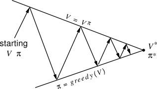

LLMs for Self-Tutoring
Table of Contents
Self-Tutoring with LLMs as Generalized Policy Iteration
A core result from education research is Bloom's 2 sigma problem, which roughly states that the average student that recieves one-on-one tutoring scores higher than 98% of students who learn just through classroom settings. This is fairly outrageous: even just elevating the median student to 70th percentile would feel like an extremely large discrepancy.
Classroom settings are therefore remarkably suspect. A one-size-fits-all setting which allows a diligent 98th percentile student to match a merely average level tutored student, and which advances to the next topic even when students score too poorly on previous tests to understand the subsequent material. It is simultaneously too slow and too fast, necessarily capturing a narrow window which builds a shaky foundation for lower-performing students and limits the heights attainable by higher-performing ones.
But in the real world, tutors are outside the price range of most middle-class-and-below students, regardless of their potential membership in the upper percentiles. LLMs offer a potential opportunity to disrupt this, and provide high-quality tutoring for meager costs (or free). Looming fear of hallucination means that this has not taken off as a widespread solution: can this be mitigated?
Generalized Policy Iteration
A good framework for getting practical value out of LLMs is to frame the problem in terms of Generalized Policy Iteration. The overall idea of GPI is that you have a policy which determines your actions, and a value function which tells you how good your policy is. These two update each other in a cycle: the value function is adjusted based on the current policy, and then the policy is adjusted to pick the best action in each state. If you do this cycle over and over again, these two will converge to the same spot, where neither changes because you have the optimal value function and policy.

The core idea here is that you need to build up some understanding yourself, and use the LLM to improve spots of that understanding which are lacking.
A Strategy for Self-Tutoring with LLMs
I have found LLMs tremendously helpful at learning new material, despite admittedly frequent hallucination. You have to be careful to use it in a way that enables you to actually, reliably, learn in an effective way.
You Still Have To Read
A very common use-case for LLMs seems to be summarization. Very often you will LLM evangelists show off how good a model is at summarizing lots of text, and you will see questions from potential new users like "how can I be certain that this text is accurate?" To me, this completely misses the forest for the trees.
Fundamental to all of this is that you still have to read the things you want to learn. The LLM can help you learn, but it cannot learn for you. You will never have a problem with LLM-generated summaries causing you problems understanding if you simply read the thing first.
There is a great divide in LLM usage which is roughly shaped like the above: people who want to use LLMs to do stuff for them, and people who want to use LLMs to enable themselves to do new stuff. LLMs can easily do your homework for you, or produce words to help you pretend like you read something. Lots of people are lazy, and the ability to do these things is disrupting the existing education infrastructure in a potentially not-so-positive way. But you, dear reader, are trying to actually learn things (right?), so it's of critical importance that you do not accidentally use LLMs in a way recommended by team lazy.
LLM Summaries as Abstracts
LLM Summaries are not useless, despite the point we just raised. A good way to think about this is that LLMs can read a huge amount of text very, very fast compared to you. As a result, you can think of LLM-generated summaries as ways to direct your reading, in scenarios where you have a lot of things to read.
Academic work often contains abstracts, which provide a high-level summary of the paper's contributions. Lots of papers get published every day, so researchers will often read lots of abstracts in order to identify which papers hold potential promise for their work. This is super useful – it helps us from having to read lots of papers just to figure out whether or not the paper would be important for us to read. Types of writing which have high volume but no abstracts often resort to having overly verbose titles. Light novels, for example, often have titles like The Results From When I Time Leaped to My Second Year of High School and Confessed to the Teacher I Liked at the Time, since readers on light novel aggregation websites get just the title and nothing else: how else to know what it's about?
If you just read the abstract, it would be silly to act like you've read the whole paper. Summaries are like this: you can think of LLM-generated summaries as abstracts you can talk to, and therefore, abstracts which are targeted towards you, specifically. Reading these can be tremendously helpful at helping you determine whether or not you should read the thing in question.
Keep Track of What You Don't Understand
When you read something challenging, you should pay close attention to the things which feel hazy vs the things that feel straightforward.
Give The LLM Your Text
If you're reading something in pdf form, you usually can put the pdf in the window. If it's too large, you can trim it with print to pdf.
Ask It About Things You Don't Understand
Generally speaking, when you don't understand something you are reading, there's a specific single threshold you are struggling with.
If the LLM can help you make that step, then you've made an improvement to your understanding. Hooray!
If the LLM hallucinates and provides you something nonsensical or incorrect, it's very likely that this will not improve your understanding. This is an easy way to have some limited verification about what it's teaching you: if the LLM helps you get a concept you were struggling with, that's good, and if the LLM gives you something confusing then you are no worse than you were before (i.e. not understanding something after reading it yourself).
Do The Exercises, Get Active Feedback
If the thing you're doing has exercises, you should try to do them, ideally with as little assistance as you can manage. LLMs are very good at homework-problem-shaped things, so even if you get stuck and want a hint you should be explicit saying something like "point me in the right direction but don't solve the problem for me".
One of the biggest benefits of using LLMs for tutoring (especially when exercises are involved) is that the model can walk through exercises with you and actively help explain why your mistakes are incorrect. This, to me, represents perhaps the biggest problem with a classroom setting: tests are vilified because feedback is binary, things can be either right or wrong, and if you get things wrong you only learn that your current approach did not work.
Actually reviewing errors is an extremely important part of getting good at something, and LLMs offer the opportunity for personalized feedback and correcting of mistakes. Putting this another way, LLMs are often demonized in education because they can do homework for students. But, in fact, this is their biggest strength in education, because they are so good at homework that you can put in your graded homework into it and it can walk you through all your mistakes. If the explanation is hard to understand, you can ask for further clarification, and the red ink of your teacher's feedback will morph before your very eyes.
It requires you to actually care about the topic, though.
Thoughts on LLMs as the Driver for Modern Montessori
I think that of all possible applications, education is the single industry most likely to be significantly positively disrupted by LLM-driven technologies.
Montessori Education already carries with it many of the elements which, with minimal modification, could be integrated with LLM tutors to yield highly positive outcomes. Elements like standardized tests and grades are discouraged in traditional Montessori, because templated testing provides good outcomes for students who master the material and bad outcomes for students who do not. Individualized testing, individualized instruction, individualized feedback, all of these are potential ways that previously impractical teaching methods could be adapted in a modern educational curriculum.
Core to these discussions are the power of LLMs: they can be used to learn more effectively, and they can also be used to avoid having to learn anything altogether. Here is where I can envision the value human teachers and peers can provide to a student – vision into each student's mind and level of engagement is far more likely to be useful to the student compared to lecture-style instruction.